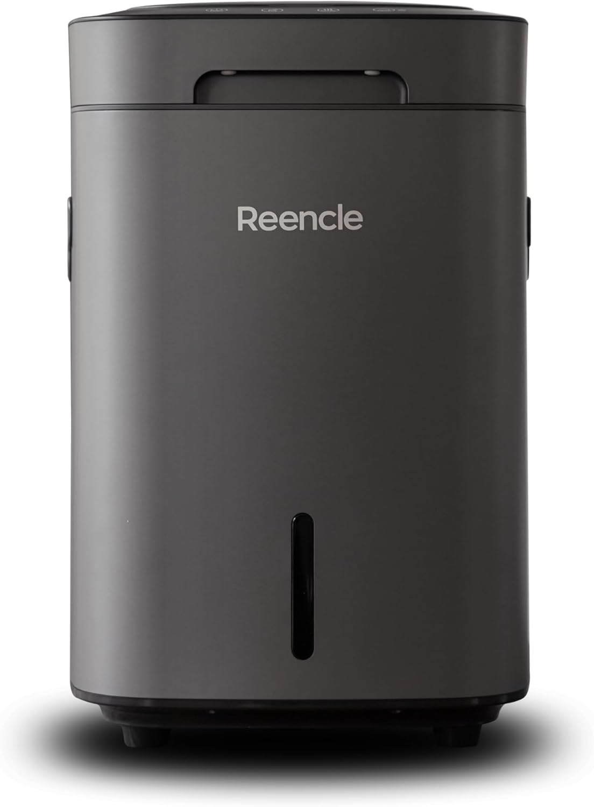

Review · Countertop composters
The Reencle Prime 14L: the biggest drum on the counter that doesn’t dehydrate
14 L of microbial digestion, 2.2 lb a day, meat and dairy in the drum, $499 — and no per-cycle consumable. The manufacturer’s numbers, the three-year cost math, and the tradeoffs the spec sheet leaves out.
Disclosure: the Reencle link on this page is an Amazon affiliate link — if you buy through it we earn a commission at no extra cost to you. It never changes the verdict below; the numbers are Reencle’s own, verified against the listing and the official product page.
One line: buy it if you want the biggest batch drum that takes meat and dairy without stepping to a bio-reactor. Skip it if you don’t want to start cycles, or if “compost” has to mean a bag you can store in the garage.
A microbial drum, not a dehydrator
The Reencle Prime is the machine that makes the “dehydrator” label on this page feel incomplete. It looks like a countertop drum and it works in batches, like a dehydrator — but inside, nothing is baked. A colony of microorganisms digests each load over a cycle of 2.5 to 24 hours, with five operating modes for different waste types, and the purification that keeps it quiet and odor-controlled is a 3-layer carbon filter that runs on a roughly 12-month replacement cycle rather than a per-cycle pod.
That puts it in a category of its own on the kitchen-composters page: bigger than the 3-to-4-liter dehydrators (14 L versus 3–4 L), cheaper than the continuous bio-reactors ($499 versus $699 and $899.99), and the only drum in the batch class that takes meat and dairy — Reencle’s own product copy even claims bones. The headline number on the Amazon listing: 2.2 lbs of food waste per day.
The specs, verified
| Parameter | Value |
|---|---|
| Chamber | 14 L (PP polypropylene) |
| Throughput | 2.2 lb/day (Amazon US listing headline) |
| Method | Microbial decomposition, 5 operating modes |
| Accepts | Produce, leftovers, meat, dairy — maker claims even bones |
| Cycle time | 2.5–24 h per batch (mode- and load-dependent) |
| Output | Dry, crumbly pre-compost; ≈90% volume reduction (claim) |
| Purification | 3-layer carbon filter; ≈12-month swap; ships with 2 filters + kit (≈2 years) |
| Footprint | 305 × 331 × 467 mm |
| Noise | 28 dB (claim) |
| Power | 1.25 kWh/day; 130 W max / 52 W avg |
| Empty cadence | Pre-compost out every 1–3 months |
| Price | $499 at Amazon US (Oct 27, 2026) |
| Rating at verification | 4.2★ / 402 ratings (Amazon US) |
Sources: Amazon US listing (B0CVNN4FC3) and Reencle’s official product pages, both verified live Oct 27, 2026. dB and throughput figures are manufacturer claims; we don’t have our own lab numbers yet, and this section gets updated when testing lands. The rating is a point-in-time snapshot — check the listing for the live count.
The three-year math
| Item | 3-year cost |
|---|---|
| Machine | $499 |
| Consumables (one carbon-filter swap, year 2) | ≈$50–100 (estimate — verify the filter price at purchase) |
| Electricity (1.25 kWh/day ≈ 456 kWh/yr @ $0.15/kWh) | ≈$205 |
| Total (3 yr) | ≈$754–804 |
Two assumptions to check before trusting the total: your actual electricity rate (the US average is used here), and the carbon-filter replacement price, which we mark as an estimate because it wasn’t published at verification. Even so, the structure is the point: no per-cycle consumable means the running cost is almost entirely electricity — about $68/year, cheaper per day than a Lomi at a quarter of the pod math.
What comes out is dry, crumbly pre-compost — not flakes, not finished compost
Here’s the honest description: the output is decomposed, not dried. The microbes do the work over days rather than the drum’s heat, so what you empty every 1–3 months is dry and crumbly with roughly 90% of the volume gone (manufacturer claim), but it’s still a pre-compost. It wants a final stretch of maturation in soil, a bed, or a worm bin before it counts as finished compost.
Compared with a dehydrator’s dry chip, that’s an argument for the Reencle: the material has already been digested, so it integrates faster into living soil. Compared with the GEMEs’ moist active substrate, it’s the opposite trade — shelf-stable-ish and easy to store, but less biologically active out of the machine. If you have a garden or a worm bin, both feed it; if you’re waiting on bagged finished compost, neither produces that.
What it earns, and what it costs you
What it earns
- The biggest drum in the batch class at the lowest price on the page — 14 L at $499, versus 3–4 L drums at $299–399.
- Takes meat and dairy; the maker claims even bones — the only non-continuous machine on this page that does.
- No per-cycle consumable: the carbon filter is a long-cycle part, and the box ships with two plus a kit (≈2 years).
- 28 dB (claim) — quieter than the dehydrators it’s replacing, per the spec sheet.
- 14 L per batch means fewer cycles to start and empty than a 3-to-4-liter dehydrator running the same daily load.
- Five operating modes for different waste types; 130 W max draw is modest on the meter.
What it costs
- It’s batch work: a 2.5–24 h cycle to load, start, and empty. Households that want feed-and-forget should look at the GEMEs.
- 2.2 lb/day is a ceiling, not a floor — a family pushing more than that, or a very meat-heavy mix, will feel the limit.
- The output is pre-compost, not bagged finished compost; the last mile happens in soil or a worm bin.
- $499 is still a real outlay for a countertop appliance.
- 4.2★ across 402 ratings is decent but younger than the 1,000+ rating base of the 4-liter dehydrators — fewer field reports to lean on.
- The carbon filter is a real recurring part at roughly yearly intervals — budget it, don’t forget it.
Reencle vs the GEMEs — and where it sits
First the question we actually get: Reencle or GEME? Both are microbial machines that take meat and dairy. The difference is rhythm, purification, and price:
| Parameter | Reencle Prime 14L | GEME Terra 2 | GEME Pro 19L |
|---|---|---|---|
| Feed rhythm | Batch, 2.5–24 h cycles | Continuous 24/7 | Continuous 24/7 |
| Throughput | 2.2 lb/day | 2 kg/day | 5 kg/day |
| Chamber | 14 L | 14 L | 19 L |
| Meat & dairy | Yes — bones claimed by maker | Yes | Yes |
| Purification | 3-layer carbon filter, ≈12-mo swap | Metal Ion Oxidation, permanent | Metal Ion Oxidation, permanent |
| Price | $499 | $699 | $899.99 |
All three numbers verified against the listings on Oct 27, 2026. The Reencle’s carbon filter is the only recurring part in the trio; the GEMEs’ oxidation systems are permanent, which is part of their case. Full six-machine comparison with every spec: the kitchen composter page.
Against the dehydrators, the Reencle’s case is the same as the GEMEs’ but cheaper: input breadth (meat and dairy in the drum), volume (14 L, not 1–4), and output character (digested pre-compost, not dry chip). Where it loses is rhythm — batch cycles instead of continuous feed — and a carbon filter where the GEMEs have none. The head-to-head of all six machines, including the three-year math, is in the countertop composter showdown.
The questions, answered
Is the Reencle Prime a dehydrator?
No. It uses microbial decomposition, not heat and airflow. A colony of microorganisms digests each batch over a 2.5 to 24 hour cycle; nothing is baked. That’s why it can take meat and dairy, which dehydrators can’t.
Can I put meat and dairy in the Reencle Prime?
Yes. Reencle’s own product copy lists meat, dairy, and bones among accepted inputs (verified on the official product page, Oct 27, 2026). The Amazon listing’s headline figure is up to 2.2 lbs of food waste per day. A heavy meat load slows the per-batch reduction, as with any microbial machine.
Does the Reencle Prime need consumables?
Nothing per cycle. The only recurring part is the 3-layer carbon purification filter, which is a long-cycle item (roughly 12 months). The box ships with 2 filters plus a replacement kit, about 2 years of purification out of the gate. Budget one filter swap per year after that.
How fast does the Reencle Prime work?
Each batch runs 2.5 to 24 hours depending on load and operating mode (five modes for different waste types). The Amazon listing’s headline is 2.2 lbs of food waste per day, which is the practical ceiling for a small household. It’s batch work: you load, start a cycle, and empty when it finishes.
What do I do with the Reencle Prime’s output?
It’s dry, crumbly pre-compost with roughly 90% of the original volume reduced (manufacturer claim). Spread it on garden beds, mix it into soil, or feed it to a worm bin for the final stretch of maturation. It is not bagged, shelf-stable finished compost.
Reencle Prime or GEME Terra 2?
Both are microbial machines that take meat and dairy; the difference is rhythm and price. The Reencle works in 2.5 to 24 hour batch cycles in a 14 L drum at $499. The Terra 2 runs continuous 24/7 feed at 2 kg/day for $699 with a permanent (filter-free) oxidation system. If you want feed-and-forget, the Terra 2; if you want the biggest drum for the least money, the Reencle.